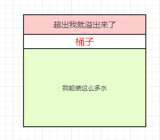
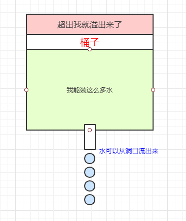
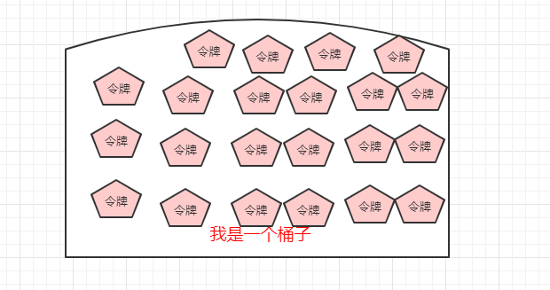
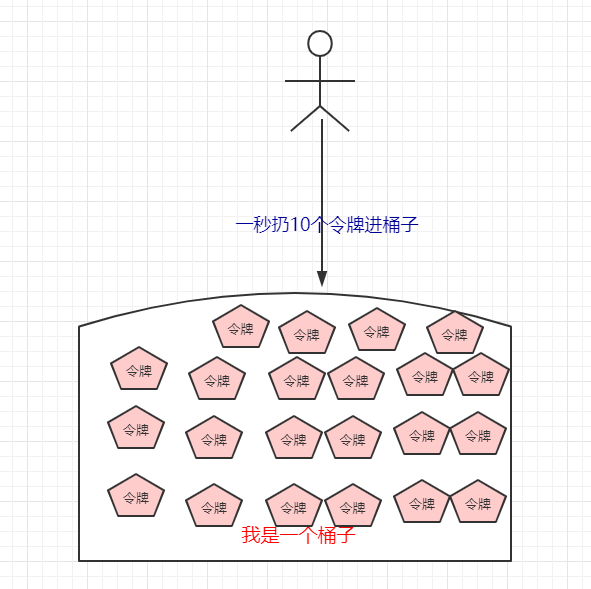
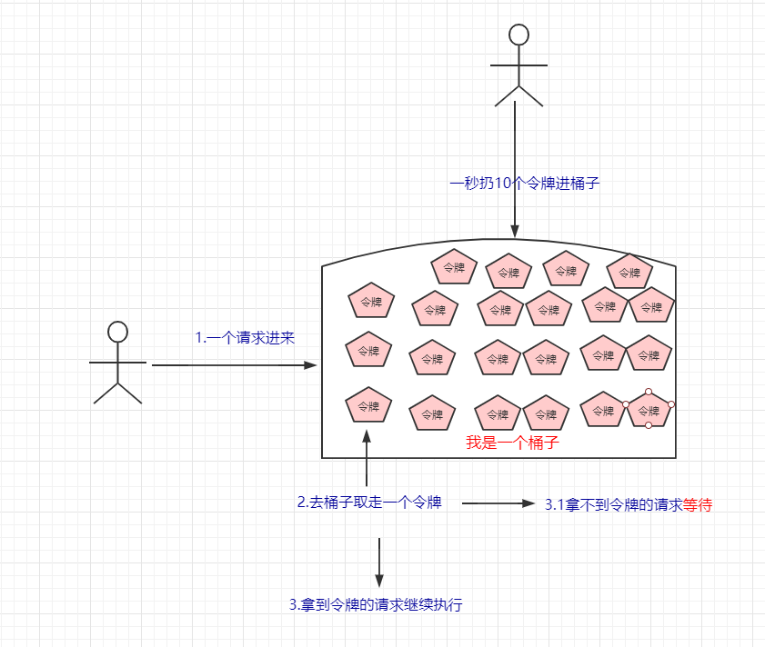
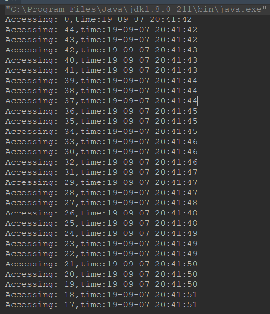

原文连接:https://www.cnblogs.com/Java3y/p/11531658.html
前言
只有光头才能变强。
文本已收录至我的GitHub仓库，欢迎Star：https://github.com/ZhongFuCheng3y/3y
之前在学习的时候也接触不到高并发/大流量这种东西，所以限流当然是没接触过的了。在看公司项目的时候，发现有用到限流(RateLimiter)，顺带了解一波。
一、限流基础知识介绍
为啥要限流，相信就不用我多说了。
- 比如，我周末去饭店吃饭，但是人太多了，我只能去前台拿个号，等号码到我的时候才能进饭店吃饭。如果饭店没有限流怎么办？一到饭点，人都往里冲，而饭店又处理不了这么多人流，很容易就出事故（饭店塞满了人，无路可走。饭店的工作人员崩溃了，处理不过来)
- 回到代码世界上也是一样的，服务器能处理的请求数有限，如果请求量特别大，我们需要做限流（要么就让请求等待，要么就把请求给扔了）
在代码世界上，限流有两种比较常见的算法：
- 令牌桶算法
- 漏桶算法
1.1 什么是漏桶算法
比如，现在我有一个桶子，绿色那块是我能装水的容量，如果超过我能装下的容量，再往桶子里边倒水，就会溢出来（限流）：

我们目前可以知道的是：
- 桶子的容量是固定的（是图上绿色那块）
- 超出了桶子的容量就会溢出（要么等待，要么直接丢弃）
OK，现在我们在桶子里挖个洞，让水可以从洞子里边流出来：

桶子的洞口的大小是固定的，所以水从洞口流出来的速率也是固定的。
所以总结下来算法所需的参数就两个：
- 桶子的容量
- 漏水的速率
漏桶算法有两种实现：
- 不允许突发流量的情况：如果进水的速率大于出水的速率，直接舍弃掉多余的水。比如，我的桶子容量能装100L，但我的桶子出水速率是10L/s。此时，如果现在有100L/s的水进来，我只让10L的水进到桶子，其余的都限流。（限定了请求的速度）
- 允许一定的突发流量情况：我的桶子能装100L，如果现在我的桶子是空的，那么这100L的水都能进我的桶子。我以10L/s的速率将这些水流出，如果还有100L的水进来，只能限流了。
经过上面的分析我们就知道：
漏桶算法可以平滑网络上的突发流量(因为漏水的速率是固定的)
1.2 什么是令牌桶算法
现在我有另外一个桶子，这个桶子不用来装水，用来装令牌：

令牌会一定的速率扔进桶子里边，比如我1秒扔10个令牌进桶子：

桶子能装令牌的个数有上限的，比如我的桶子最多只能装1000个令牌。
每个请求进来，就会去桶子拿一个令牌
- 比如这秒我有1001个请求，我就去桶子里边拿1001个令牌，此时可能会出现两种情况：
- 桶子里边没有1001个令牌，只有1000个，那没拿到令牌的请求只能被阻塞了（等待）
- 桶子里边有1001个令牌，所有请求都可以执行。

令牌桶算法支持网络上的突发流量
漏桶和令牌桶的区别：从上面的例子估计大家也能看出来了，漏桶只能以固定的速率去处理请求，而令牌桶可以以桶子最大的令牌数去处理请求
二、RateLimiter使用
RateLimiter是Guava的一个限流组件，我这边的系统就有用到这个限流组件，使用起来十分方便。
引入pom依赖：
<dependency>
<groupId>com.google.guava</groupId>
<artifactId>guava</artifactId>
<version>20.0</version>
</dependency>RateLimiter它是基于令牌桶算法的，API非常简单，看以下的Demo:
public static void main(String[] args) {
//线程池
ExecutorService exec = Executors.newCachedThreadPool();
//速率是每秒只有3个许可
final RateLimiter rateLimiter = RateLimiter.create(3.0);
for (int i = 0; i < 100; i++) {
final int no = i;
Runnable runnable = new Runnable() {
@Override
public void run() {
try {
//获取许可
rateLimiter.acquire();
System.out.println("Accessing: " + no + ",time:"
+ new SimpleDateFormat("yy-MM-dd HH:mm:ss").format(new Date()));
} catch (Exception e) {
e.printStackTrace();
}
}
};
//执行线程
exec.execute(runnable);
}
//退出线程池
exec.shutdown();
}我们可以从结果看出，每秒只能执行三个：

三、分布式限流
RateLimiter是一个单机的限流组件，如果是分布式应用的话，该怎么做？
可以使用Redis+Lua的方式来实现，大致的lua脚本代码如下：
local key = "rate.limit:" .. KEYS[1] --限流KEY
local limit = tonumber(ARGV[1]) --限流大小
local current = tonumber(redis.call('get', key) or "0")
if current + 1 > limit then --如果超出限流大小
return 0
else --请求数+1，并设置1秒过期
redis.call("INCRBY", key,"1")
redis.call("expire", key,"1")
return current + 1
endJava代码如下：
public static boolean accquire() throws IOException, URISyntaxException {
Jedis jedis = new Jedis("127.0.0.1");
File luaFile = new File(RedisLimitRateWithLUA.class.getResource("/").toURI().getPath() + "limit.lua");
String luaScript = FileUtils.readFileToString(luaFile);
String key = "ip:" + System.currentTimeMillis()/1000; // 当前秒
String limit = "5"; // 最大限制
List<String> keys = new ArrayList<String>();
keys.add(key);
List<String> args = new ArrayList<String>();
args.add(limit);
Long result = (Long)(jedis.eval(luaScript, keys, args)); // 执行lua脚本，传入参数
return result == 1;
}解释：
- Java代码传入key和最大的限制limit参数进lua脚本
- 执行lua脚本（lua脚本判断当前key是否超过了最大限制limit）
- 如果超过，则返回0（限流）
- 如果没超过，返回1（程序继续执行）
参考来源：
更多资料参考：
- https://segmentfault.com/a/1190000016042927
- [http://wuwenliang.net/2018/10/27/%E8%87%AA%E5%B7%B1%E5%86%99%E5%88%86%E5%B8%83%E5%BC%8F%E9%99%90%E6%B5%81%E7%BB%84%E4%BB%B6-%E5%9F%BA%E4%BA%8ERedis%E7%9A%84RateLimter/](http://wuwenliang.net/2018/10/27/自己写分布式限流组件-基于Redis的RateLimter/)
最后
乐于输出干货的Java技术公众号：Java3y。公众号内有200多篇原创技术文章、海量视频资源、精美脑图，关注即可获取！

觉得我的文章写得不错，点赞！